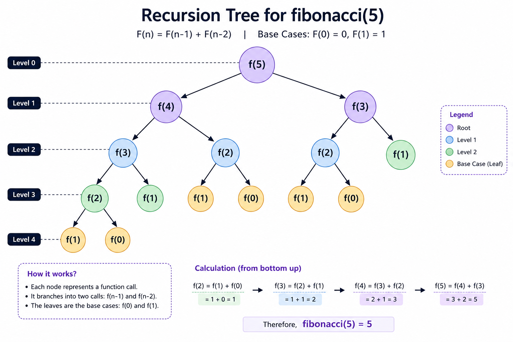

Introduction
⦿ Every programmer reaches a point where simple loops are no longer enough.
⦿ At first, recursion may seem confusing because a function appears to call itself repeatedly.
⦿ Questions like "How does the function know when to stop?", "What happens to previous function calls?", and "How does the program return back?" are common for every beginner. Once you understand the call stack, recursion becomes one of the most elegant problem-solving techniques in programming.
⦿ In this guide, we will build these concepts from the ground up. We will begin with the fundamentals of recursion, understand how the call stack works internally, learn to design recursive solutions, and then naturally transition into backtracking with intuitive explanations and real coding examples in C++.
Why Recursion?
⦿ You might wonder why programmers use recursion when loops already exist.
⦿ The answer is that some problems become much simpler and easier to understand with recursion.
⦿ Recursion is important because it allows a function to solve a problem by breaking it into smaller instances of the same problem.
⦿ Problems like generating all possible paths, solving mazes, exploring decision trees, or traversing complex data structures require a completely different way of thinking. This is where Recursion and Backtracking become essential.
Let's See Recursion
How does Recursion work?
Step 1 : 2 + sum([5,7,4])
Step 2 : 2 + (5 + sum([7,4]))
Step 3 : 2 + (5 + (7 + sum([4])))
Step 4 : 2 + (5 + (7 + (4 + sum([]))))
When base case hits, function starts returning
Step 1 : 2 + (5 + (7 + (4 + 0)))
Step 2 : 2 + (5 + (7 + 4))
Step 3 : 2 + (5 + 11 )
Step 4 : 2 + 16
So, finally function will return 18 as total sum of array
Base case and Recursive case
(i) Base case
(ii) Recursive case
Suppose your goal is to reach the top of the tree. You don't jump directly to the highest branch.
Instead, you climb:
Ground
↓
Branch 1
↓
Branch 2
↓
Branch 3
↓
Highest Branch (Base Case)
Every movement from one branch to the next is like making a recursive call.
When you finally reach the highest branch, you stop climbing (Base Case) and begin returning.
Base Case
The base case is the condition where a recursive function stops calling itself and starts returning.
We will understand the concept of the base case again through different questions.
Recursive Case
When you are standing on a branch, ask yourself: "Can I climb higher?"
- If the answer is YES, then you climb to the next branch.
- If the answer is NO, then you have reached the base case and start coming back down.
Every time you decide to climb to the next branch, you are doing the "recursive case".
Now, there are two possibilities:
1. You return with a mango
This is similar to a recursive function whose return type is int (or any non-void type).
Just as you come back carrying a mango, the function returns with a value.
For example:
int factorial(int n) { // Return type of function is int
if (n==1) // Base Case
return1;
return n ＊ factorial(n-1); // recursive case
}
Here, when the base case is reached, the function returns the integer value 1. That value is then passed back through all the previous recursive calls.
2. You return without a mango
This is similar to a recursive function whose return type is void.
You still climb up and come back down, but you don't bring anything with you. In the same way, a `void` function returns control to the previous function call "without returning any value".
For example:
void printNumbers(int n) {if (n==0)// Base Case
return;
printNumbers(n-1);
}
Here, the function simply stops at the base case and returns. Since its return type is `void`, no value is sent back.
We will understand the complete concept behind this problem later. For now, just focus on identifying the base case and the recursive case.
- Climbing up the tree → Making recursive calls.
- Reaching the highest branch you can climb → Reaching the base case.
- Coming back down → Returning from the recursive calls.
- Coming back with a mango → Returning a value (int, string, etc.)
- Coming back without a mango → Returning without a value (void).
Recurrence Relation
A recurrence relation is a mathematical equation that expresses a problem in terms of one or more smaller instances of the same problem.
Example :
If we have to calculate factorial of 5
Then, We can write
5 ! = 5 x 4 !4 ! = 4 x 3 !
3 ! = 3 x 2 !
2 ! = 2 x 1 !
1 ! = 1 x 0 !
Since 0! = 1,
1! = 1 × 1 = 1
Therefore, the recurrence relation for this problem is:
factorial(i) = i × factorial(i - 1)
Where :
- 1 ≤ i ≤ n
- factorial(i - 1): Represents the smaller subproblem that helps solve the larger problem.
- factorial(i): Represents the current problem, which is solved by multiplying i with the result of the smaller subproblem, factorial(i - 1).
int factorial(int n) {
if (n == 0) // base case
return 1;
return n * factorial(n - 1); // recursive case
}
For the above code, the base case is n == 0 because the recurrence relation keeps reducing the value of n by 1 until it reaches 0. By definition, 0! = 1, so recursion stops at this point and returns 1. If we did not stop at 0, the recursion would continue indefinitely and eventually attempt to compute the factorial of negative numbers, which is not defined.
Types of Recursion
We know that recursion is nothing but function calling itself
1.Head Recursion :
In head recursion, the function first calls itself, and the remaining code executes while returning back from the stack.
#include <iostream>
using namespace std;
void printHead(int n){
if(n == 0) return;
printHead(n - 1); // recursive call first
cout << n << " "; // executes after returning
}
int main(){
printHead(5);
}
2.Tail Recursion :
In tail recursion, the recursive call is the last operation.
#include <iostream>
using namespace std;
void printTail(int n){
if(n == 0) return;
cout << n << " "; // work first
printTail(n - 1); // recursive call last
}
int main(){
printTail(5);
}
Call Stack
A stack is a data structure that follows: LIFO → Last In First Out
Meaning: The thing which enters last comes out first.
Example:
Imagine a stack of plates.
Plate 3 ← Last placed
Plate 2
Plate 1 ← First placed
When you remove plates:
Plate 3 comes out firstthen Plate 2
then Plate 1
This is exactly how memory handles function calls.
What happens in Stack when we call a normal function?
void fun(){
cout<<"Hello";
}
int main(){
```
fun();
````
return 0;
}
Execution:
main()
|
|
calls
|
v
fun()
When main() starts:
A stack frame is created:
Stack
----------------
main()
----------------
When main() calls fun():
A new frame is pushed
Stack
---------------------
fun()
---------------------
main()
---------------------
Now CPU executes fun().
After finishing the execution : fun() removed from the Stack
And, Stack becomes :
Stack
----------------
main()
----------------
Now, main() will resume execution from where it was paused when it called fun().
Then, main() also finishes and removed from Stack
Now, Stack becomes empty
Whenever a function is called, memory creates a small box called Stack Frame
It stores:
- Function parameters
- Local variables
- Return address
- Current execution state
These all store in stack frame
Example:
void fun(int x){
int y = 10;
}
For this function Stack may Store :
Stack :
------------------------------------
fun()
x = value
y = 10
where to return
-------------------------------------
Every recursive call gets its own separate stack frame.
we know recursion means a function calling itself
Example:
void print(int n){
if(n == 0){
return ;
}
cout<<n;
print(n-1);
}
Let's assume n = 3
CALL : Print(3)
EXECUTION :
print(3)
|
cout<<3
|
print(2)
|
cout<<2
|
print(1)
|
cout<<1
|
print(0) ----> Base case
Output : 3 2 1
Note: Here, 0 is not printed after 1 because the function execution stops at the base case (n == 0).
LET US SEE : Stack during Recursion Call
Initial:
Step 1: main() calls print(3)stack :
-----------------------
print(3)
-----------------------
Step 2: Now print(3) calls print(2) :
Stack :
-----------------------
print(2)
-----------------------
print(3)
-----------------------
Step 3: Now print(2) calls print(1):
Stack :
-----------------------
print(1)
-----------------------
print(2)
-----------------------
print(3)
-----------------------
Step 4: Now print(1) calls print(0):
Stack :
-----------------------
print(0)
-----------------------
print(1)
-----------------------
print(2)
-----------------------
print(3)
-----------------------
Base case : if( n == 0)
return;
So, the base case has been reached. Now, the function will start returning from top of stack.
And rest all functions will removed/returned form every stack step by step
Step by Step returning of the function in Call Stack
Step 1: When print(0) returns:
Stack :
-----------------------
print(1)
-----------------------
print(2)
-----------------------
print(3)
-----------------------
Step 2: Now, print(1) returns:
Stack :
-----------------------
print(2)
-----------------------
print(3)
-----------------------
Step 3: Now, print(2) returns:
Stack :
-----------------------
print(3)
-----------------------
Step 2: Now, print(3) returns:
Stack :
-----------------------
Here, execution completes, and the call stack becomes empty as each function returns.
Confusion While Reading Stack Documentation... [Not Important]
Why is the Function Call Flow shown from Top to Bottom, but the Stack shown from Bottom to Top?
Many beginners get confused because the function call flow and the call stack are drawn in different directions. The reason is that they represent two different things.
1. Function Call Flow (Top → Bottom)
This diagram only represents the execution order of the program. It does not show how memory is organized..
Example:
fun(3)
|
v
fun(2)
|
v
fun(1)
|
v
fun(0)
2. Call Stack (Bottom → Top)
The call stack shows how function calls are stored in memory.
Whenever a function is called, a new stack frame is created and pushed onto the top of the stack.
Example:
Top
-------------
fun(0)
-------------
fun(1)
-------------
fun(2)
-------------
fun(3)
-------------
Bottom
Key Difference :
- Function Call Flow shows how the program executes.
- Call Stack shows how function calls are stored in memory.
A recursive call does NOT destroy the previous function. It pauses it.
Example:
void fun(int n){
if (n == 0)
return;
cout<<"Going Up "<<n<<endl;
fun(n-1);
cout<<"Comming Back "<<n<<endl;
}
Assume, n = 3
Call : fun(3)
Output :
Going Up 3
Going Up 2
Going Up 1
Comming Back 1
Comming Back 2
Comming Back 3
Why?
Let's See the Explanation Step By Step :
Phase 1 : Function Calling
Step 1 : When fun(3) runs
Stack :
-----------------------------------------------------
fun(3), n = 3
Executed: cout<<"Going Up 3"
Waiting...
Next Line To Execute→ cout<<"Coming Back 3"
Return Address → main()
------------------------------------------------------
- When fun(3), it prints "Going Up 3", and calls fun(2)
- fun(3) Pauses here and calls fun(2)
- The CPU says : Okay, I will remember where i stopped. Let me execute fun(2)
Step 2 :
Stack :
-----------------------------------------------------
fun(2), n = 2
Executed: cout<<"Going Up 2"
Waiting...
Next Line To Execute→ cout<<"Coming Back 2"
Return Address → fun(3)
-----------------------------------------------------
fun(3), n = 3
Executed: cout<<"Going Up 3"
Waiting...
Next Line To Execute→ cout<<"Coming Back 3"
Return Address → main()
------------------------------------------------------
- When fun(2), it prints "Going Up 2", and calls fun(1)
- fun(2) Pauses here and calls fun(1)
- The CPU says : Okay, I will remember where i stopped. Let me execute fun(1)
Step 3 :
Stack :
-----------------------------------------------------
fun(1), n = 1
Executed: cout<<"Going Up 1"
Waiting...
Next Line To Execute→ cout<<"Coming Back 1"
Return Address → fun(2)
-----------------------------------------------------
fun(2), n = 2
Executed: cout<<"Going Up 2"
Waiting...
Next Line To Execute→ cout<<"Coming Back 2"
Return Address → fun(3)
-----------------------------------------------------
fun(3), n = 3
Executed: cout<<"Going Up 3"
Waiting...
Next Line To Execute→ cout<<"Coming Back 3"
Return Address → main()
------------------------------------------------------
- When fun(1), it prints "Going Up 1", and calls fun(0)
- fun(1) Pauses here and calls fun(0)
- The CPU says : Okay, I will remember where i stopped. Let me execute fun(0)
Step 4 :
Stack :
-----------------------------------------------------
fun(0), n = 0 // base case
-----------------------------------------------------
fun(1), n = 1
Executed: cout<<"Going Up 1"
Waiting...
Next Line To Execute→ cout<<"Coming Back 1 "
Return Address → fun(2)
-----------------------------------------------------
fun(2), n = 2
Executed: cout<<"Going Up 2"
Waiting...
Next Line To Execute→ cout<<"Coming Back 2"
Return Address → fun(3)
-----------------------------------------------------
fun(3), n = 3
Executed: cout<<"Going Up 3"
Waiting...
Next Line To Execute→ cout<<"Coming Back 3"
Return Address → main()
------------------------------------------------------
- n == 0 is the base, so fun(0) dies at base case and does not go for recursive case
- Now stack starts popping
- The function below regains control and resumes execution from the point where it was paused before calling another function.
Output till phase 1 :
Going Up 3
Going Up 2
Going Up 1
Phase 2 : Function Returning (Coming Back)
Step 1 :
Stack :
-----------------------------------------------------
fun(1), n = 1
Resumed After:fun(0)
Now Executing:
cout<<"Coming Back 1 "
Return Address → fun(2)
-----------------------------------------------------
fun(2), n = 2
Executed: cout<<"Going Up 2"
Waiting...
Next Line To Execute→ cout<<"Coming Back 2"
Return Address → fun(3)
-----------------------------------------------------
fun(3), n = 3
Executed: cout<<"Going Up 3"
Waiting...
Next Line To Execute→ cout<<"Coming Back 3"
Return Address → main()
------------------------------------------------------
Output :Coming Back 1
Step 2 :
Stack :
-----------------------------------------------------
fun(2), n = 2
Resumed After:fun(1)
Now Executing:
cout<<"Coming Back 2"
Return Address → fun(3)
-----------------------------------------------------
fun(3), n = 3
Executed: cout<<"Going Up 3"
Waiting...
Next Line To Execute→ cout<<"Coming Back 3"
Return Address → main()
------------------------------------------------------
Output :Coming Back 2
Step 3 :
Stack :
-----------------------------------------------------
fun(3), n = 3
Resumed After:fun(2)
Now Executing:
cout<<"Coming Back 3"
Return Address → main()
------------------------------------------------------
Output :Coming Back 3
Final Stack
-------------------
main()
-------------------
After main() finishes, the call stack also becomes empty and the program terminates.
Output from phase 2 :
Comming Back 1
Comming Back 2
Comming Back 3
Overall Output :
Going Up 3
Going Up 2
Going Up 1
Comming Back 1
Comming Back 2
Comming Back 3
Complete Timeline
main()
│
▼
fun(3)
│
├── Going Up 3
▼
fun(2)
│
├── Going Up 2
▼
fun(1)
│
├── Going Up 1
▼
fun(0)
│
└── Base Case
FUNCTION RETURNING
fun(0)
│
▼
fun(1)
│
├── Coming Back 1
▼
fun(2)
│
├── Coming Back 2
▼
fun(3)
│
├── Coming Back 3
▼
main()
Once the recursive call reaches the base case and starts returning, the paused function regains control and resumes execution from the exact point where it was paused—that is, from the statement immediately after the recursive function call.
Recursion Trees
A recursion tree is simply a visual representation of how recursive function calls are created.
- Every circle (node) represents one function call.
- Every arrow (edge) represents a function calling another function.
- The root is the very first function call.
- The leaves are the function calls that hit the base case.
1. Linear Tree
Each node creates exactly one child.
Example of Tree :
void fun(int n)
{
if(n == 0)
return;
fun(n - 1);
}
If n = 3, then
The recursion tree becomes
fun(3)
|
|
fun(2)
|
|
fun(1)
|
|
fun(0) ← Base Case
Every function creates only one child.
This is called a linear recursion tree.
2. Binary Tree
Each function creates two recursive calls.
Example :
#include <iostream>;
using namespace std;
int fibonacci(int n)
{
// Base Case
if (n == 0 || n == 1)
return n;
// Recursive Case
return fibonacci(n - 1) + fibonacci(n - 2);
}
int main()
{
cout<<fibonacci(5);
}
Recurrence Relation : F(n) = F(n−1) + F(n−2)
Base case : F(0) = 0 and F(1) = 1
Recursion Tree for fibonacci(5) :
See Binary Tree

See Dry Run
The calculation starts from the leaf nodes (base cases) and moves upward.
When base case hits
fib(1) = 1
fib(0) = 0
fib(2) = fib(1) + fib(0)
= 1 + 0
= 1
Now,
fib(3) = fib(2) + fib(1)
= 1 + 1
= 2
Next,
fib(4) = fib(3) + fib(2)
= 2 + 1
= 3
Finally,
fib(5) = fib(4) + fib(3)
= 3 + 2
= 5
We'll explore this concept thoroughly when we move on to Binary Trees in the Backtracking section.
Common Mistakes
See Common Mistakes
- the base case,
- the recursive case, and
- how each call moves closer to the base case.
Interview Questions
Click here to see questions.
Q1. Explain recursion using a real-life example.
Q2. What is the biggest disadvantage of recursion?
Q3. Why should every recursive call move closer to the base case?
Q4. How do you know whether a problem can be solved using recursion?
Q5. What is the biggest advantage of recursion?
Q6. Why is recursion generally slower than iteration?
Q7. When should recursion be avoided?
Q8. Is every recursive problem solvable using loops?
Q9. Can every loop be converted into recursion?
Q10. Which approach uses more memory: recursion or iteration? Why?
Q11. Can a recursive function have multiple base cases?
Q12. What happens if the recursive case does not reduce the problem size?
Q13. What happens if the base case is never reached?
Q14. How do you decide what the base case should return?
Q15. What exactly happens when a recursive function calls itself?
Q16. Where does a function pause?
Q17. How does a function know where to resume execution?
Q18. Which statement executes immediately after a recursive call returns?
Q19. Which recursion tree is formed by Fibonacci?
Q20. Explain the "Going Up" and "Coming Back" example.
Q21. Can execution continue below the recursive call before the recursive call finishes?
Q22. What is stored in memory that helps the CPU resume execution?
Q23. Why does recursion first go deep and then come back?
Q24. Can recursion exist without a call stack?
Q25. Why is recursion heavily used in trees and backtracking?
Q26. How would you debug an infinite recursive function?
Q27. What is the first thing you check when a recursive function is not working?
Q28. If a recursive function gives a stack overflow error, what could be the possible reasons?
Q29. Which is easier for the compiler to optimize: recursion or iteration?
Q30. Why is recursion often called Divide and Solve?
Q31. What information is stored inside a stack frame?
Q32. Why does recursion use the call stack?
Q33. Why doesn't recursion overwrite the previous function call?
Q34. Does a recurrence relation tell us when recursion should stop?
Q35. Write the recurrence relation for factorial.
Quick Revision
What is Recursion?
- Recursion is a problem-solving technique where a function calls itself to solve a smaller version of the same problem.
- Every recursive function must eventually stop by reaching a base case.
Two Parts of Every Recursive Function
Base Case :
- The stopping condition.
- Prevents infinite recursion.
- Returns a value (or simply returns in a void function).
Recursive Case :
- The part where the function calls itself.
- Reduces the problem into a smaller subproblem.
Golden Rule of Recursion
Recursion Flow
Current Problem
│
▼
Smaller Problem
│
▼
Even Smaller Problem
│
▼
Base Case
│
▼
Return
│
▼
Return
│
▼
Final Answer
Recurrence Relation
Example:
factorial(n) = n × factorial(n - 1)
Remember:
- Recurrence Relation → How to reduce
- Base Case → When to stop
What Happens in the Call Stack?
- A new stack frame is created.
- The current function pauses after making a recursive call.
- The new recursive call starts executing.
- After reaching the base case, functions return one by one in reverse order (LIFO).
Pause & Resume (Most Important Concept)
Statement 1 :
Recursive Call
Statement 2 :
The execution works like this:
Execute Statement 1
↓
Pause Here
↓
Execute Recursive Call
↓ Base Case
↓
Resume from Statement 2
Everything written after the recursive call waits until that recursive call finishes.
Function Calling vs Function Returning
(Current → Smaller Problem)
fun(3)
↓
fun(2)
↓
fun(1)
↓
fun(0)
------------------------
Function Returning
fun(0)
↑
fun(1)
↑
fun(2)
↑
fun(3)
Going Down → Function Calls
Coming Up → Function Returns
Recursion Tree
- Each node = one function call.
- Each edge = one function calling another.
- Root = first function call.
- Leaf = base case.
When Should You Use Recursion?
- The problem can naturally be divided into smaller versions of itself.
- The solution follows a repeated pattern.
- You need to explore all possibilities (Backtracking).
- You're working with recursive data structures like Trees.
When Should You Avoid Recursion?
- A simple iterative solution is easier.
- The recursion depth can become very large.
- Memory usage is a concern.
Recursion Checklist
- What is my base case?
- How will I reduce the problem?
- Am I moving closer to the base case?.
- What should the recursive call return?
- What should happen before the recursive call?
- What should happen after the recursive call?
Practice Problems
Q1. PRINT ARRAY USING RECURSION [Time Complexity: O(n) ]
Solution :
void printArray(int arr[], int n, int i) {// Base case
if(i == n)
return;
cout<<arr[i] << " ";
// recursive case
printArray(arr, n, i+1);
}
Q2. PRINT ARRAY IN REVERSE
Solution :
void printReverse(int arr[], int n, int i) {// Base case
if(i == n)
return;
// recursive case
printReverse(arr, n, i+1);
cout <<arr[i] << " ";
}
Q3. SUM OF ARRAY
Solution :
int arraySum(int arr[], int n) {// Base case
if(n == 0)
return 0;
// recursive case
return arr[n-1] + arraySum(arr, n-1);
}
Q4. FIND MAXIMUM ELEMENT
Solution :
int findMax(int arr[], int n) {// Base case
if(n == 1)
return arr[0];
// Recursive Case
return max(arr[n-1], findMax(arr, n-1));
}
Q5. CHECK IF ARRAY IS SORTED
Solution :
bool isSorted(int arr[], int n) {// Base Case
if(n == 1)
return true;
// Base Case
if(arr[n-1] < arr[n-2])
return false;
// Recursive Case
return isSorted(arr, n-1);
}
Q6. LINEAR SEARCH USING RECURSION
Solution :
bool search(int arr[], int n, int key) {// Base case
if(n == 0)
return false;
// Base case
if(arr[n-1] == key)
return true;
// Recursive Case
return search(arr, n-1, key);
}
Q1. PRINT CHARACTERS OF STRING
Solution :
void printString(string s, int i) {// Base case
if(i == s.length())
return;
cout << s[i] << " ";
// Recursive Case
printString(s, i+1);
}
Q2. PRINT STRING IN REVERSE
Solution :
void reversePrint(string s, int i) {// Base case
if(i == s.length())
return;
// Recursive Case
reversePrint(s, i+1);
cout << s[i];
}
Q3. PALINDROME CHECK USING RECURSION
Solution :
bool palindrome(string s, int l, int r) {// Base case
if(l >= r)
return true;
if(s[l] != s[r])
return false;
// Recursive Case
return palindrome(s, l+1, r-1);
}
Example : MADAM, M == M A == A
Q4. COUNT OCCURRENCES OF A CHARACTER
Solution :
int countChar(string s, int i, char key) {// Base Case
if(i == s.length())
return 0;
// Recursive Case
if(s[i] == key)
return 1 + countChar(s, i+1, key);
// Recursive Case
return countChar(s, i+1, key);
}